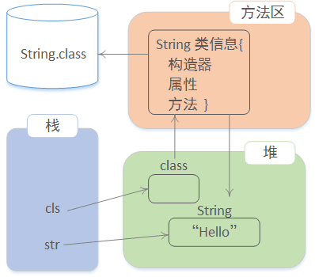

JAVA反射机制是在运行状态中，对于任意一个类，都能够知道这个类的所有属性和方法；对于任意一个对象，都能够调用它的任意一个方法和属性；这种动态获取的信息以及动态调用对象的方法的功能称为java语言的反射机制。—-百度百科
动态：运行期间动态绑定执行规则。
静态：编译以后就已经确定的执行过程。
动态加载类到方法区
1 | public void test1(){ |
创建对象过程
1.Java 将类加载到方法区（自动完成）
2.利用类创建对象。内存中有一个String对象，方法区中还有类的信息！通过Class对象可以获取类的相关信息。

动态获取类的信息
动态获取类的方法信息
Foo类（package：demo）：
1 | //编译以后是 demo.Foo.class |
动态获取Foo类的方法：
1 |
|
输出：
1 | test |
动态获取类的属性信息
Eoo类：
1 | class Eoo{ |
动态获取Eoo类的属性：
1 |
|
输出：
1 | id name salary meno |
动态获取类的构造器信息
1 |
|
输出：
1 | demo.Eoo[] |
动态创建对象
调用无参构造器创建对象
如果没有无参数构造器，将发生异常！Class 提供了方法 newInstance()。
1 |
|
输出：
1 | Fri Sep 16 20:04:55 CST 2016 |
调用有参构造器创建对象
如果没有对应有参数构造器！将发生异常！参数传递错误、将发生异常！
1 | /** |
输出：
1 | Wed Jan 01 08:00:00 CST 1969 |
动态获取类的属性值
实现过程（如何利用反射API实现动态属性访问）：
1.找到对象的类型信息（方法区）
2.在信息中找属性信息（Field）
3.在对象上获取属性的值！
类Goo：
1 | public class Goo { |
动态获取属性的值：
1 | /** |
输出：
1 | 5 Tom |
动态调用类的方法
1 |
|
反射的意义
常见的框架的底层都是使用反射实现的！如：Spring MyBatis Struts2 Hibernate …
现有application.xml文件：
1 |
|
模拟Spring框架的getBean()方法：
1 | public class ApplicationContext { |